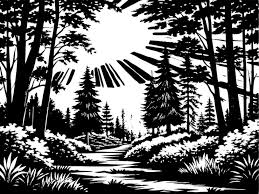

Ignorar los susurros
Deciden no arriesgarse y aceleran el paso. Pero en su prisa, caen en una trampa oculta y quedan atrapados en un pozo profundo. Sin manera de salir y sin ayuda cercana, el grupo queda atrapado indefinidamente.
Fin de esta aventura.